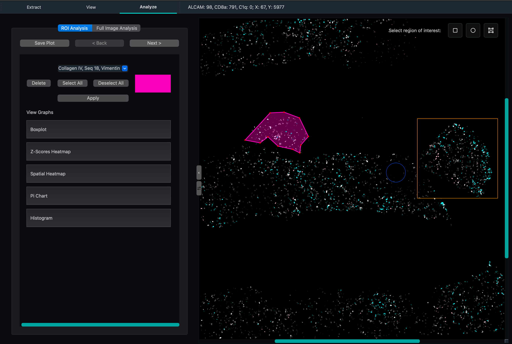

Analysis Tab
The Analysis tab provides statistical and visual analysis tools for exploring protein expression data within specific regions of interest (ROIs). Draw regions on the canvas, select proteins, and generate a range of visualizations — all without leaving the application.
Note
Save a screenshot of the Analysis tab to docs/source/_static/analysis_tab.png to display it here.
{kind=link}

Interface Overview
The Analysis tab has two main sections:
Navigation Controls: Back/Next buttons for moving between ROIs, plus Save Plot.
Content Area: Scrollable panel showing the current ROI’s visualizations and controls.
Region of Interest (ROI) Selection
ROIs are drawn directly on the canvas in the View tab using the selection tools. Each drawn region becomes a separate analysis view navigable within the Analysis tab.
Selection tools (also accessible via keyboard shortcuts):
Rectangle —
RCircle/Ellipse —
CPolygon/Lasso —
L
Each ROI is shown with a color indicator and displays its spatial bounds. Use the Delete button to remove the current ROI.
How region filtering works
When a region is drawn, cells whose centroids fall within the region geometry are selected:
Rectangle: cells within the coordinate bounding box.
Circle/Ellipse: cells satisfying the elliptical equation
(x-cx)²/a² + (y-cy)²/b² ≤ 1.Polygon: cells tested using a ray casting algorithm — a ray is cast from the centroid; an odd number of boundary crossings means the point is inside.
Protein Selection
For each ROI, choose which proteins to include in the analysis:
Protein Selection Dropdown: Multi-select — choose any combination of available protein channels.
Select All / Deselect All: Quickly toggle all proteins.
Click Apply to regenerate all visualizations for the selected protein set.
Visualizations
Six visualization types are available for each ROI. Each can be expanded into a separate window for side-by-side comparison.
Box Plot
Shows the distribution of expression levels for each selected protein within the ROI:
Center line: median expression
Box: interquartile range (IQR, 25th–75th percentile)
Whiskers: 1.5× IQR
Points: outliers beyond the whiskers
Z-Score Heatmap
Displays standardized expression values across proteins and cells. Each value is the number of standard deviations from the protein’s mean across all cells in the ROI. Useful for identifying proteins with unusually high or low relative expression.
Spatial Heatmap
Maps the spatial distribution of protein expression within the ROI. Custom intensity thresholds can be set per protein to highlight expression hotspots and spatial gradients.
Pie Chart
Shows the proportion of cells exceeding an expression threshold for each selected protein. Useful for understanding the cellular composition of a region in terms of which proteins are most broadly expressed.
Histogram
Displays the frequency distribution of expression values for each selected protein. Outlier trimming is applied to focus on the main distribution. Useful for identifying bimodal populations or skewed expression.
UMAP
Projects the high-dimensional protein expression data into 2D using Uniform Manifold Approximation and Projection (UMAP). Each point is a cell; proximity in the plot reflects similarity in expression profile. Clusters in the UMAP often correspond to cell subtypes or states.
The UMAP launcher is also accessible from the View Tab tab.
How it works
UMAP constructs a high-dimensional graph of cell-to-cell similarities based on their protein expression vectors, then optimizes a low-dimensional (2D) layout that preserves the local and global structure of that graph. The result is a 2D scatter plot where cells with similar expression profiles appear close together. Unlike PCA, UMAP preserves non-linear structure and is well-suited for identifying discrete cell populations.
Working with Visualizations
Expand to New Window: Open any visualization in a separate window for detailed viewing or side-by-side comparison.
Return to Graph List: Go back to the main list of available visualizations for the current ROI.
Add New Charts: Create additional visualization instances.
Full Image Analysis
In addition to ROI-based analysis, the Analysis tab supports analysis across the entire loaded dataset — not just a drawn region. This mode uses all cells in the loaded cell data file, making it useful for global expression profiles and whole-image UMAP projections.
Typical Workflow
In the View tab, draw one or more ROIs using the selection tools.
Switch to the Analysis tab and select the proteins of interest.
Click Apply to generate visualizations.
Step through ROIs with Back / Next to compare regions.
Expand plots into separate windows for publication-quality side-by-side comparison.
Click Save Plot to export key findings.
Usage Tips
Use the polygon lasso to trace irregular tissue structures or specific anatomical compartments.
Select related protein pairs to compare co-expression patterns within the same region.
Create multiple ROIs of similar size in different areas to systematically survey the tissue.
Use UMAP on the full image first to identify major cell populations, then draw ROIs around spatial clusters to examine them in detail.